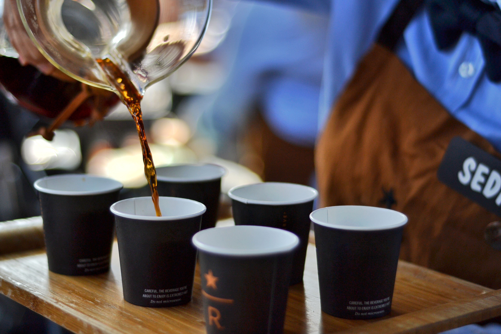
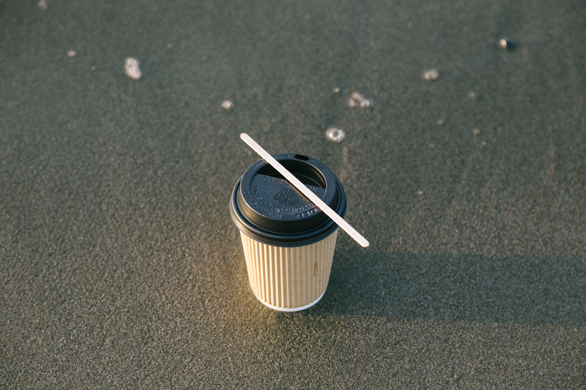
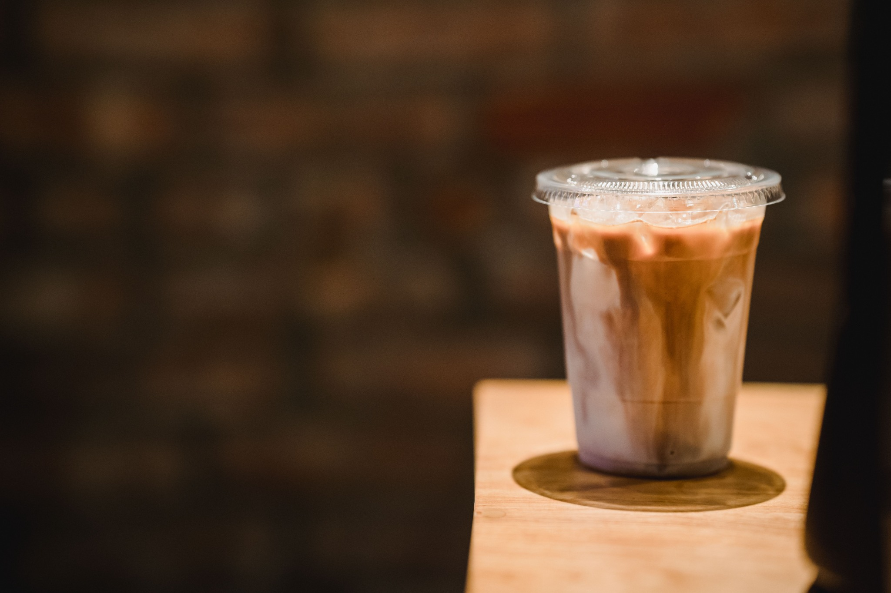
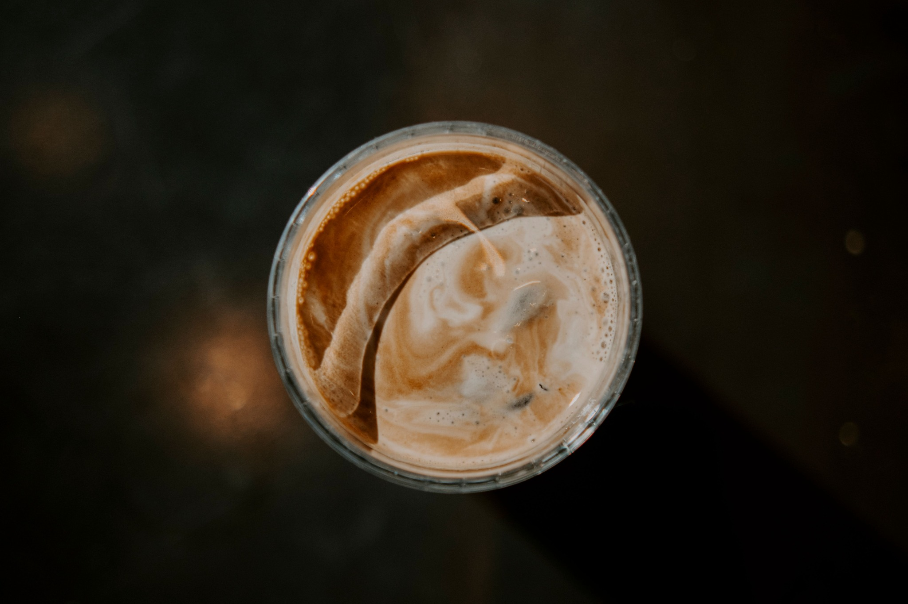
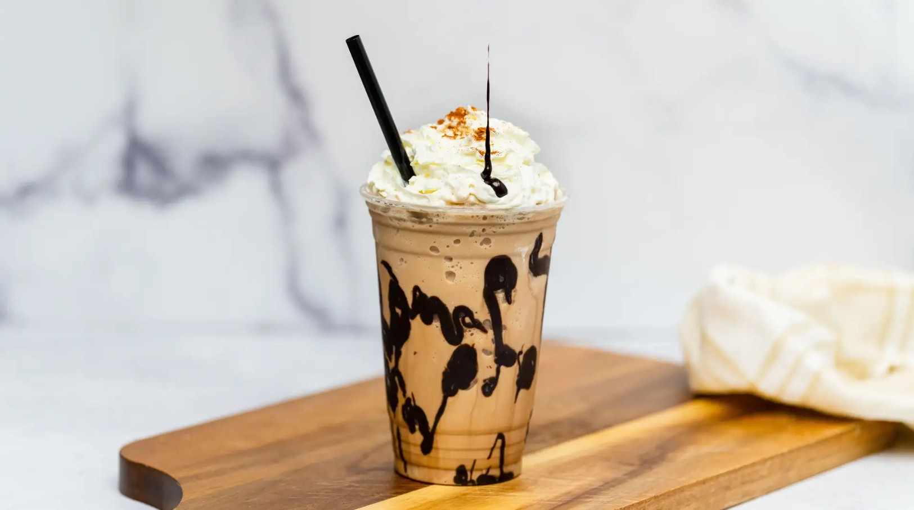

.jpg)
Cappuccino
Café com leite cremoso e espuma.
R$ 12,00Clique em um item para destacar o produto.
Café com leite cremoso e espuma.
R$ 12,00
Café leve, ideal para o dia a dia.
R$ 9,00
Refrescante, moderno e saboroso.
R$ 14,00
Maior proporção de leite, ideal para quem prefere um café menos intenso.
R$ 12,00
Mistura de café, leite e chocolate, geralmente adoçado, oferecendo uma experiência doce e cremosa.
R$ 9,00
Bebida gelada e cremosa, feita com café, leite e gelo, muitas vezes com sabores adicionais.
R$ 14,00Os pilares fundamentais que guiam o nosso compromisso diário.
A opinião de quem compartilha do nosso amor por café e pelo planeta.
⭐⭐⭐⭐⭐
"O melhor cappuccino da região! Além do sabor incrível, adoro saber que a borra de café é totalmente reciclada e destinada à compostagem."
⭐⭐⭐⭐⭐
"Excelente atendimento e ambiente acolhedor. Os copos de papel biodegradáveis para viagem são uma iniciativa fantástica que todos deviam adotar."
⭐⭐⭐⭐⭐
"Café de altíssima qualidade com um propósito lindo de apoio aos pequenos produtores rurais. Sou fã do projeto e super recomendo!"